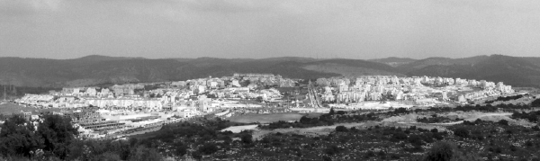

The Extraordinary Growth of Chabad in Beit Shemesh
Beit Shemesh is often in the headlines. Beyond the battles and the demonstrations, there are extensive Chabad communal and outreach activities that are directed by the shliach R’ Eliezer Weiner with his staff of shluchim. * Six shluchim, seven Chabad shuls, and more than four hundred students in Chabad schools in a city located in a pastoral setting close to Yerushalayim.

CHABAD AND THE EXTREMIST PROTESTERS
The protesters stood wearing long “zebra” kapotes and hoarsely yelled “gevald.” They held signs which basically said “scram.” Tensions heated up and the organizers of the Chassidus shiur in the D’var Avrohom Chabad Shul, decided to smuggle the maggid shiur, the mashpia R’ Mendel Wechter of Nachalat Har Chabad, out the back door. This was to avoid any confrontation with the zealots.
That is just one little incident that occurred about four months ago in Beit Shemesh, a city that is expanding at a dizzying rate. Some fanatics have made this otherwise peaceful city synonymous with extremism, hatred and fighting against all those who don’t think like them. They don’t shy away from any tactic, and the leadership of Beit Shemesh is helpless.
Beit Shemesh, which ends up in the headlines nearly every month and is under intense scrutiny by the media, was most recently in the news this September. The issue at that time was a fight against the Goloventzitz construction, with the protesters claiming it is home to a historic burial site. Rabbi Moshe Sternbuch, head of the Eida HaChareidis Beis Din ruled that it is permitted to check the graves to see if they are Jewish, though Rabbi Yitzchak Tuvia Weiss, the leader of the Eida, ruled that the graves cannot be disturbed. Dozens of protesters tried to prevent the work from continuing, the police arrived, and demonstrators were beaten and arrested.
The upcoming mayoral election is being closely followed, since it will establish the future of the city. The incumbent, Moshe Abutbul, is a friend of Chabad. His opponent is an irreligious candidate who is the final hope of those who want to prevent what they call the “chareidi-izing of the city.”
From a Lubavitch perspective, Beit Shemesh is much more than demonstrations, protests, and screaming. It is a city where an array of Chabad activities have existed for twenty-five years, long before the protesting types moved in. Beit Shemesh has abundant shiurim in Chassidus, numerous Chabad shuls, and beautiful Chabad schools.
R’ Eliezer Weiner, the first shliach to Beit Shemesh and the one who built up the Chabad activities there, ended up in Beit Shemesh “by chance.”
“I married my wife Chana Greenberg of Kfar Chabad at the end of 5746/1986. We were committed to going on shlichus.”
In Tishrei 5747, the Weiner couple was in 770 when they heard a sicha from the Rebbe about “test me in this,” discussing the opening of Chabad houses. “That is when we got a serious push to follow through on our decision.”
When they returned home, the idea of working in Beit Shemesh occurred to him. “Why here? Because before I got married, I lived in Yerushalayim. When I learned in Lud and Kfar Chabad I would see Beit Shemesh on the way, so I was suddenly reminded of it.”
Beit Shemesh has grown to a population of 100,000 people. In less than a decade, it is likely to become one of the ten largest cities in Eretz Yisroel. But back then, when the Weiner couple moved there, there were only 15,000 people.
“I went to Tzach and asked if there was a shliach in Beit Shemesh. I was told there wasn’t and I decided to go to this small town and begin working. I went with a friend to the Beit Dagan junction, wanting a bus that went to Beit Shemesh. My friend decided to hitch us a ride and the driver of the second car that stopped near us told us that this is where he was heading. Today, I know that it is highly unusual to find a driver at Beit Dagan who is going to Beit Shemesh,” he said with a smile. “We discovered that not only was he heading where we wanted to go, but he also had a picture of the Rebbe in his car.”
The man, who was not a Chabad Chassid, was a teacher in a vocational school. He lived in Beit Shemesh.
“As things developed, this man who gave us a ride became one of the people who were a tremendous help to us in settling in the town. This showed us that the Rebbe is with us and that he helped us from the very outset.”
R’ Weiner began traveling to Beit Shemesh twice a week:
“On Friday we did Mivtza T’fillin and another day we did Mivtza Mezuza and gave shiurim on the Parsha and Tanya.”
The population of Beit Shemesh at that time was comprised of people whose traditions were Sephardic. They had a warm feeling for traditional Judaism.
“It was a traditional place. You could always feel Shabbos and the Yomim Tovim on the street. I am talking about the time before Russian and Ethiopian immigrants came here. I was the first ultra-Orthodox and Lubavitcher person in the town. I remember that there was a clearing on the mountain that was designated as the future site for ultra-Orthodox Jews, but they hadn’t started anything yet.”
On Hei Teves of that year, there was a dramatic change regarding shlichus in Beit Shemesh:
“That year was Didan Natzach and we decided to write to the Rebbe and ask for his blessing and permission to move to Beit Shemesh and be full-time shluchim there. We did not receive a response. A few months later, before 11 Nissan, R’ Shlomo Maidanchek a”h, my wife’s uncle, went to the Rebbe. We asked him to submit a note for us. On 9 Nissan we received the Rebbe’s response: With the counsel and consent of Chabad askanim and rabbanim in Eretz Yisroel.
“Since this was not a typical response, we went to four committees for their approval before heading to Beit Shemesh: Rabbanei Chabad, the then existing ‘umbrella group for Chabad Chassidim’ – they even provided funding for half a year – and Tzach, who gave matching funds.”
As for the approval of Chabad askanim, R’ Weiner asked a friend what this meant. The friend advised him to get together some Lubavitchers who were involved in askanus and to ask them. That is what he did.
“I went to the Reshet and met with R’ Meir Freiman a”h and R’ Kalman Druk, two prominent askanim. I told them what I needed and they wished me well.”
Another six months went by until the Weiners moved to Beit Shemesh, which did not stop them from continuing their work in the meantime including a big Lag B’Omer parade, a Siyum HaRambam, and summer activities.
“After we found an apartment, we moved in for Simchas Torah 5748 with our oldest daughter who was born in Elul.”
But they weren’t alone. In addition to the Rebbe who accompanied them, they arrived with seven bachurim “including my brother-in-law, Yisroel Maidanchek, Bentzi Borgan and others. We made a minyan together with some local people who had become close to us during the year we had worked there. We even had Tahalucha to various shuls.
“At first, I opened a Chabad house in the center of Beit Shemesh, the area now known as the old Beit Shemesh, and began doing the usual shlichus work.”
He suddenly discovered that an entire city had been built around him and it was ultra-Orthodox. Even Chabad Chassidim had started a community there, or actually, several communities.
The Beit Shemesh of 5774 is a sort of ingathering of the exiles. Alongside Jews who are not yet frum who live in the original city, there now live religious Jews of all types and backgrounds: Chabad and Litvish and Sephardim, and zealots from Yerushalayim in a neighborhood bordering a knitted kippot population. In the midst of all this, the burgeoning Chabad community in the city maintains tight knit neighborly relations in a way that likely does not exist anywhere else. Even the character of the community is unique to Beit Shemesh.
Despite the “anti” image which Beit Shemesh has acquired in recent years due to its reaction to the Eida’s activities, R’ Weiner speaks of Jews whose hearts are receptive to Torah and mitzvos:
“They welcomed us very nicely. All in all, it is a warm, traditional city and we have been beneficiaries of their fondness, then and now. Even recently, when there is so much tension between the population at large and the ultra-Orthodox, everyone knows that Chabad is out of the picture; that we are here, with all our hearts, for everyone, without examining where they stand religiously. We have never been spoken of derogatorily.”
HUNDREDS OF
CHABAD FAMILIES
In Beit Shemesh there are over 200 Chabad families, which include a “population segment of immigrants from France, Argentina, Canada, England, the US, etc. but most are Israelis.”
The reason for this has to do with the “tremendous development of the city, mainly in the past, when an apartment could be purchased at a reasonable price. Beit Shemesh is conveniently located and has transportation access to all over the country. Around Beit Shemesh are open mountainous areas with good air.” The Lubavitchers who came here from abroad were looking for a close, warm community, says R’ Weiner.
Along with the expansion of the community, starting in 5760, schools began opening one after another. The shliach R’ Yisroel Beiser is in charge of the preschools, R’ Chilik Kupchik runs the elementary school for boys, having gotten the appointment after a fierce battle, and a girls’ school is run by Mrs. Chani Aryeh of Kiryat Gat. About four hundred students, boys and girls, attend Chabad schools in Beit Shemesh; the numbers grow from year to year.
The battle for the boys’ school took place four years ago. The Education Ministry wanted to appoint a principal. Not only wasn’t he a Lubavitcher; he was as far away from it as east is to west. The parents refused to accept him and decided to fight for their rights, i.e. a principal who is a Lubavitcher and who is suited to oversee their children’s chinuch.
Eventually, on the day after Chai Elul, the Chassidim won. When we asked R’ Weiner to tell us about it, he referred us to the archives of Chabad.info where we found an article that summed up the saga:
“Yesterday (20 Elul 5769), the Education Ministry caved in, in the face of the strike in Chabad schools, and told the High Court of Justice that they had decided to cancel the appointment of the new principal, who was parachuted in without the consent and approval of the parents’ committee. As was publicized last week, the Chabad schools waged a strike following the Education Ministry’s decision to appoint a person who does not identify with ultra-Orthodox values and who, in addition, was pushed aside from previous positions due to arguments with his staff of teachers and for poor relationships with parents of students.
“The mayor, R’ Moshe Abutbul, submitted a petition to the High Court to cancel the appointment. In his petition, he asked the court to decide based on rational grounds, namely that just as it is obvious that an ultra-Orthodox person would not be appointed to a religious public school or to a public school, so too, it is unreasonable to appoint someone without ultra-Orthodox values to run an ultra-Orthodox school. Likewise, he argued, he does not consider it acceptable to appoint someone in Beit Shemesh who was forced out of other schools; this would set an awful precedent.
“On Motzaei Shabbos there was an emergency meeting of the parents of the students in the D’var Avrohom Shul with the participation of the entire parent body, rabbanei Chabad, the shliach R’ Eliezer Weiner, and others. The main speaker was R’ M. M. Gluckowsky, who spoke about the mesirus nefesh needed for pure chinuch of children.
“He also said that the Rebbe had instructed Chabad to enroll its schools in the public-religious school system so as to obtain funding with which they could open many schools in order to save the immigrant children during the years of aliya to Eretz Yisroel. The Rebbe said explicitly at the time that this was solely on condition that there would be full educational autonomy and that all the appointments of educators and principals would be made solely by Chabad rabbanim and askanim. It was always like that. Whenever the Education Ministry interfered, the Rebbe said they should leave the public-religious system and join the network of officially recognized private schools. The Rebbe stressed that the union with the public-religious was solely for the purpose of maintaining the Chabad schools, and that this union was not holy and they could and should defect from it if there would be no choice but to do so.”
Eventually the matter reached a satisfactory conclusion: “The judges on the High Court of Justice reprimanded the representatives from the Education Ministry and asked what the purpose in their stubbornness was, and who needed a principal if there were no students. The judges did not understand why they had to impose on a community school someone who did not identify with its values. In the end, the Education Ministry caved in and canceled the appointment. They said that there would soon be a public tender for the position of principal and the principal would be selected solely with the approval of the administration of the mosdos. The students went back to school.”
The present principal, Yechiel Kupchik, is highly regarded.
SIX SHLUCHIM, SEVEN CHABAD SHULS
The outreach in the city grew over the years. Today there are six shluchim who work with R’ Weiner “with impressive unity and collaboration, thank G-d,” as he put it. The shluchim are spread out through the city. They meet a few times a year, to farbreng and talk.
As part of the programming which includes shiurim, mivtzaim, house calls, mosdos and more, R’ Weiner puts an emphasis on Geula and Moshiach:
“When it comes to Inyanei Moshiach and Geula, the community is united. There is a consensus on the subject; even though we don’t all think alike (there are differences of opinion which we cannot deny) the debates never deteriorate into machlokes. I think it’s a very positive situation. There is an ongoing shiur on the weekly D’var Malchus. All in all, the shluchim and Anash live with the subject. Material is given out on Moshiach and Geula, and there are shiurim and mashpiim who farbreng on the subject.”
R’ Weiner gives credit to R’ Itzik Weintraub and R’ Menachem Lugov “who organize farbrengens with mashpiim who live with the subject of Geula, like R’ Chaim Nisselevitz and R’ Zalman Notik.”
There are also conversations with people on the street: those who do not yet identify as religious, the traditional Jews, and Polisher Chassidim too, whom he describes as “smart people who ask to the point and respond appropriately. They attend farbrengens even though they know that the Rebbe MH”M will be spoken about, but that doesn’t bother them; on the contrary.”
THE TOLDOS AHARON CHASSIDIM AT THE FARBRENGEN
There is a shul for English speaking people in Ramat Beit Shemesh Alef, which was started by R’ Motti Slodowitz, a warmhearted Chassid who put so much into this shul. Many English speakers were drawn in through this shul. They were attracted to Beit Shemesh due to the high quality life of life and the more reasonably priced apartments.
There is also a Chabad shul for French speakers called Ohr Lubavitch. That there are shuls for speakers of different languages is ideal for Lubavitchers, who can enjoy community life without having to contend with a foreign language and mentality.
The irreligious sector is not overlooked either. R’ Weiner says, “Many people come to write to the Rebbe through the Igros Kodesh both at the Chabad House and at our home. We see miracles as well as the simple faith of seemingly simple Jews who understand that you must carry out what the Rebbe says.
“Just this week, two sisters who are not yet religious came to me. One of them came here before in order to ask for a bracha and she opened to an amazing answer which is why she brought her sister. I was amazed to hear the first one, who did not look at all connected to religion, say to the other one, who seemed like her, ‘You must listen to whatever the Rebbe writes and can’t play games with the answer. If you ask, you have to accept the answer.’ It was moving to see the pure faith of those who are seemingly distant and their hiskashrus and bittul to the Nasi Ha’dor.”
When R’ Weiner first went to Beit Shemesh, he didn’t dream that it would one day look like Yerushalayim and B’nei Brak. If someone back then would have told him about dozens of young men who belong to the Toldos Aharon Chassidus, crowding around the mashpia R’ Zalman Gopin in Beit Shemesh, he would have laughed. But today, this is a reality.
This sea change began fifteen years ago when the impossibility of the cost of religious housing led askanim to look for alternatives to the big cities. Beit Shemesh, which is twenty minutes away from Yerushalayim, was chosen as an ideal place for young couples who wanted to be close to Yerushalayim and not far from the center of the country.
SHIURIM IN CHASSIDUS
In order to appreciate to what extent Chabad has penetrated the religious sectors of Beit Shemesh, it pays to take a look at the seven Chabad shuls, especially those in Ramat Beit Shemesh Alef and Beis, where most of the Lubavitchers live and which are intended for Lubavitchers. Aside from those, there are two Chabad shuls where most of the congregants apparently are not Lubavitch, considering their dress.
The first is the D’var Avrohom Shul run by R’ Shimon Wallis, which was built by R’ Mordechai Mendelson. In this unique shul, there are shiurim in Chassidus every night and there is a large library for Chassidus. Rabbis Wechter and Gopin give shiurim in Chassidus there. The fifty or so members of the k’hilla identify as Polisher Chassidim and Lubavitchers, but their children do not attend Chabad schools.
There is another shul, similar in format, located in the Cheftziba neighborhood, called Beis Menachem. The gabbai is R’ Menachem Schwartz. The people who daven there, like their counterparts in D’var Avrohom, do not look like Lubavitchers, but they keep Chabad customs, go on mivtzaim, send their children to Chabad schools and even bring mashpiim like R’ Zalman Notik and R’ Zalman Landau to farbreng with them. The D’var Avrohom people call them Meshichistin.
Ramat Beit Shemesh beis is reminiscent of Mea Sh’arim in Yerushalayim. R’ Shimon Wallis is the one who works intensively with this crowd. The mashpia R’ Zalman Gopin gives a shiur once a week and has a following, and every so often there are farbrengens with mashpiim. R’ Sholom Feldman was once brought to farbreng with the Neturei Karta and Toldos Aharon crowd, and they were eager to hear what he had to say. It was quite a sight to behold. They didn’t let him go until six in the morning. R’ Michoel Taub of Kfar Chabad also farbrenged there and it was tremendously inspiring. The participants, non-Lubavitchers, said afterward that they cried that night, they were so moved.
R’ Weiner said, “Most of the people in Beit Shemesh, even the ultra-Orthodox, are not pleased by the zealots’ behavior. They are a small, fringe group that is causing damage to the city and the religious themselves. With their demonstrations, blocking buses, and burning trash bins they hurt their own neighborhoods. It’s a shame they don’t realize this.”
He says that when he attends Kinusim of the shluchim, and people hear that he lives in Beit Shemesh, they say, “The place where they throw stones.” That’s what they associate with it, sad to say.
Aside from the story with which this article began, in which they were disturbing a Chassidishe farbrengen, he says that there is hardly any interference with Chabad’s work, because it focuses mainly on those who are not yet religiously observant.
“We don’t operate in their neighborhood except on rare occasions, so we don’t disturb them. At the same time, there are shiurim given by mashpiim like R’ Mendel Wechter and R’ Zalman Gopin; this can drive the zealots crazy. They usually do nothing, but there are times they pick up their heads and it’s not pleasant. The demonstration against R’ Wechter, for example, expressed their anger that even people from the best families in their circles were attending shiurim in Chassidus.
“We once had a group of about twenty Polisher Chassidim who spent Shabbos in Kfar Chabad. Unfortunately, word got out and they threw these men out of kollel. This affects some of them, but there are those who are not afraid and have no qualms about announcing their affiliation with Chabad, such as the grandson of the previous Admur of Toldos Avrohom Yitzchok and who is the nephew of the present Admur. He openly attends the farbrengens and speaks about the Rebbe like a Chassid in every respect.”
***
We must also mention the Ohr Tzvi U’Menucha shul, led by R’ Tzvi Hartman, which is in the heart of the business section of Ramat Beit Shemesh Alef, donated by the owner of the lot Nota Tzivin. It is the “Itzkowitz” of the city (Itzkowitz is a “minyan factory” in B’nei Brak like Shomrei Shabbos in Boro Park and Landau’s in Flatbush).
“There are numerous minyanim for Shacharis from 6-11 in the morning, and dozens of minyanim for Mincha and Maariv. That is also where we usually hold the main farbrengens because this is the center of the community.”
Right before R’ Weiner left his house for Mincha, he said, “The battles in Beit Shemesh do not interfere with our work. They merely serve to emphasize how important the work of Chabad is to this city. We are the only movement which both the ultra-Orthodox as well as the not yet religious view as a unifier of all the factions in the city. This is the case even though we do not hide our views about Geula and Moshiach. If you take the approach of not being fazed by those who mock, you end up succeeding.”
Mordechaisegal. "The Extraordinary Growth of Chabad in Beit Shemesh." Beis Moshiach, no. 901 (November 5, 2013).